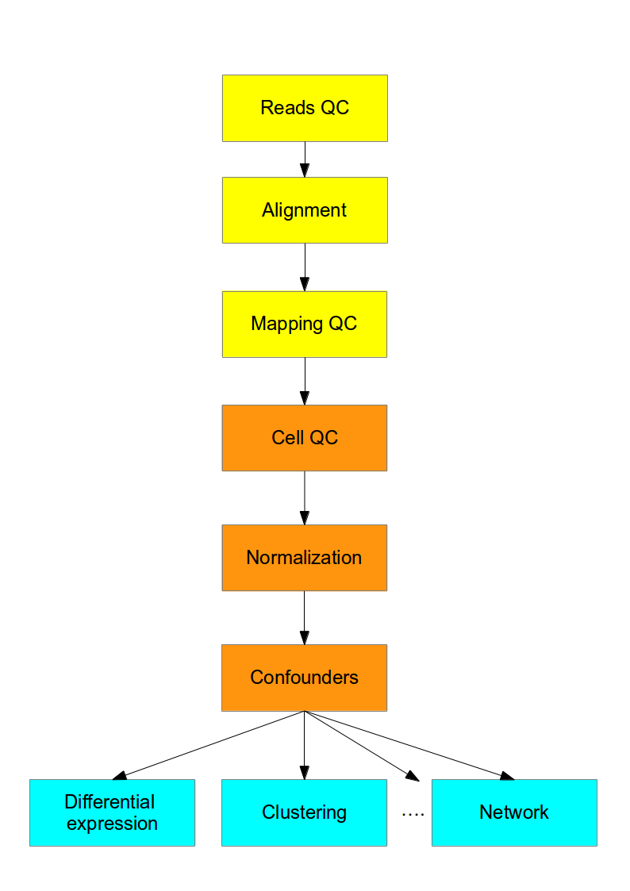

<main class="jupyter-page">

<div class="jb_cell">

<div class="cell border-box-sizing text_cell rendered"><div class="inner_cell">
<div class="text_cell_render border-box-sizing rendered_html">
<h1 id="Introduction-to-single-cell-RNA-seq">Introduction to single-cell RNA-seq<a class="anchor-link" href="#Introduction-to-single-cell-RNA-seq"> </a></h1><h2 id="Bulk-RNA-seq">Bulk RNA-seq<a class="anchor-link" href="#Bulk-RNA-seq"> </a></h2><ul>
<li>A major breakthrough (replaced microarrays) in the late 00's and has been widely used since</li>
<li>Measures the <strong>average expression level</strong> for each gene across a large population of input cells</li>
<li>Useful for comparative transcriptomics, e.g. samples of the same tissue from different species</li>
<li>Useful for quantifying expression signatures from ensembles, e.g. in disease studies</li>
<li><strong>Insufficient</strong> for studying heterogeneous systems, e.g. early development studies, complex tissues (brain)</li>
<li>Does <strong>not</strong> provide insights into the stochastic nature of gene expression</li>
</ul>
<h2 id="scRNA-seq">scRNA-seq<a class="anchor-link" href="#scRNA-seq"> </a></h2><ul>
<li>A <strong>new</strong> technology, first publication by Tang et al. in 2009</li>
<li>Did not gain widespread popularity until <a href="https://www.ohio.edu/bioinformatics/upload/Single-Cell-RNA-seq-Method-of-the-Year-2013.pdf">~2014</a> when new protocols and lower sequencing costs made it more accessible</li>
<li>Measures the <strong>distribution of expression levels</strong> for each gene across a population of cells</li>
<li>Allows us to study new biological questions in which <strong>cell-specific changes in transcriptome are important</strong>, e.g. cell type identification, heterogeneity of cell responses, stochasticity of gene expression, inference of gene regulatory networks across the cells</li>
<li>Datasets range <strong>from $10^2$ to $10^6$ cells</strong> and increase in size every year</li>
<li>Currently there are several different protocols in use, e.g. SMART-seq2 (Picelli, 2013), CELL-seq (Hashimshony, 2012) and Drop-seq (Macosko, 2015)</li>
<li>There are also commercial platforms available, including the <a href="https://www.fluidigm.com/products/c1-system">Fluidigm C1</a>, <a href="https://www.wafergen.com/products/icell8-single-cell-system">Wafergen ICELL8</a> and the <a href="https://www.10xgenomics.com/single-cell/">10X Genomics Chromium</a></li>
<li>Several computational analysis methods from bulk RNA-seq <strong>can</strong> be used</li>
<li><strong>In most cases</strong> computational analysis requires adaptation of the existing methods or development of new ones</li>
</ul>
<h2 id="Workflow">Workflow<a class="anchor-link" href="#Workflow"> </a></h2><p></p>
<p>Overall, experimental scRNA-seq protocols are similar to the methods used for bulk RNA-seq. We will be discussing some of the most common approaches in the next chapter.</p>
<h2 id="Computational-Analysis">Computational Analysis<a class="anchor-link" href="#Computational-Analysis"> </a></h2><p>This course is concerned with the computational analysis of the data
obtained from scRNA-seq experiments. The first steps (yellow) are general for any highthroughput sequencing data. Later steps (orange) require a mix of existing RNASeq analysis methods and novel methods to address the technical difference of scRNASeq. Finally the biological interpretation (blue) <strong>should</strong> be analyzed with methods specifically developed for scRNASeq.</p>
<p></p>
<p>We recommend the recent review of scRNA-seq analysis by <a href="https://www.embopress.org/doi/full/10.15252/msb.20188746">Luecken and Theis</a>.</p>
<p>Today, there are also several different platforms available for carrying out one or more steps in the flowchart above. The most popular include:</p>
<ul>
<li><a href="http://satijalab.org/seurat/">Seurat</a> is an R package designed for QC, analysis, and exploration of single cell RNA-seq data.</li>
<li><a href="https://master.bioconductor.org/packages/release/workflows/html/simpleSingleCell.html">Bioconductor</a> is a open-source, open-development R project for the analysis of high-throughput genomics data, including packages for the analysis of single-cell data.</li>
<li><a href="https://scanpy.readthedocs.io/en/stable/">Scanpy</a> is a Python package similar to Seurat</li>
</ul>
<h2 id="Challenges">Challenges<a class="anchor-link" href="#Challenges"> </a></h2><p>The main difference between bulk and single cell RNA-seq is that each sequencing library represents a single cell, instead of a population of cells. Therefore, significant attention has to be paid to comparison of the results from different cells (sequencing libraries). The main sources of discrepancy between the libraries are:</p>
<ul>
<li><strong>Amplification</strong> (up to 1 million fold)</li>
<li><strong>Gene 'dropouts'</strong> in which a gene is observed at a moderate expression level in one cell but is not detected in another cell (Kharchenko, 2014).</li>
</ul>
<p>In both cases the discrepancies are introduced due to low starting amounts of transcripts since the RNA comes from one cell only. Improving the transcript capture efficiency and reducing the amplification bias are currently active areas of research. However, as we shall see in this course, it is possible to alleviate some of these issues through proper normalization and corrections.</p>

</div>
</div>
</div>
</div>

 


</main>
